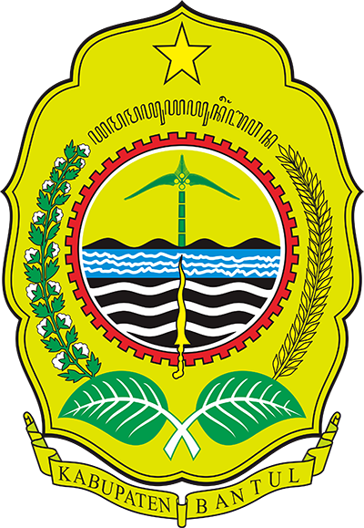

Kabupaten Bantul
D.I. Yogyakarta
Kabupaten Bantul (bahasa Jawa: ꦧꦤ꧀ꦠꦸꦭ꧀, pelafalan dalam bahasa Indonesia: [ˈbantʊl]) adalah sebuah wilayah kabupaten yang terletak di Provinsi Daerah Istimewa Yogyakarta, Indonesia. Ibu kotanya adalah Kapanewon Bantul. Pada akhir tahun 2024, jumlah penduduk Bantul sebanyak 980.269 jiwa.
Semboyan pembangunan kabupaten ini adalah Projotamansari, yang merupakan singkatan dari Produktif-Profesional, Ijo royo royo, Tertib, Aman, Sehat, dan Asri. Pada 27 Mei 2006, gempa bumi besar berkekuatan 5,9 skala Richter mengakibatkan kerusakan yang besar terhadap daerah ini dan kematian sedikitnya 3.000 penduduk Bantul. Daerah yang terkena dampak terparah dari gempa tersebut adalah Pundong dan Imogiri.
| No | Jenis Kelamin | Jumlah |
|---|---|---|
| 1 | Laki-Laki | 488.162 jiwa |
| 2 | Perempuan | 492.107 jiwa |
| 3 | Total | 980.269 jiwa |
Kecamatan
- Bambanglipuro
- Banguntapan
- Bantul
- Dlingo
- Imogiri
- Jetis
- Kasihan
- Kretek
- Pajangan
- Pandak
- Piyungan
- Pleret
- Pundong
- Sanden
- Sedayu
- Sewon
- Srandakan
Website Kabupaten Bantul
